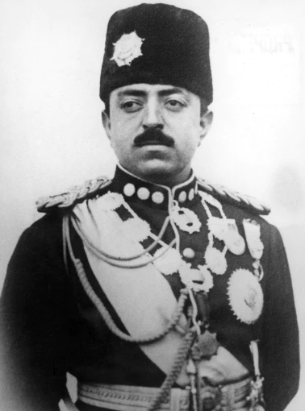
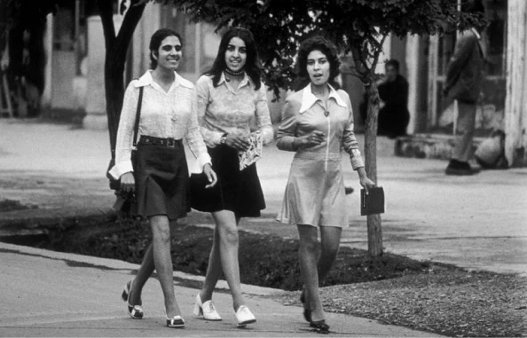
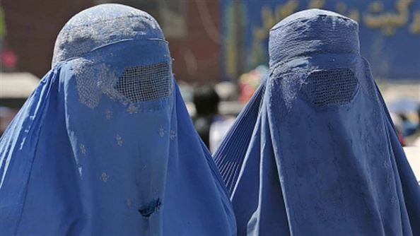
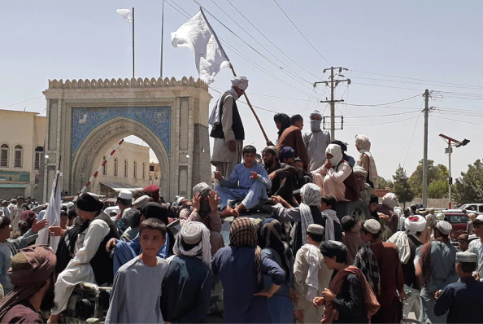

L'histoire des femmes en Afghanistan
Les droits des femmes en Afghanistan ne cessent d’évoluer, parfois de manière positive mais trop souvent de manière négative.
Années 1920-1960 : une légère amélioration
C’est dans les années 1920 où quelques réformes vont changer les conditions de vie des femmes. Cela est dû au roi Amanullah Khan, qui était au pouvoir entre 1919 et 1929, son souhait était d’améliorer la vie des Afghanes.
Roi Amanullah Khan
Ces changements commencent tout d’abord par l’interdiction du mariage forcé des jeunes. Un âge minimal sera fixé par la suite. Ensuite, il souhaite interdire le voile pour les femmes et, enfin, la polygamie pour les hommes. Il va être soutenu par la reine Soraya, son épouse. Ensemble, ils se battront pour la vie des femmes Afghanes en créant trois lycées de langues étrangères. Tous ces changements déplaisent à une grande partie de la population, principalement aux hommes qui souhaitent rester « supérieurs » aux femmes. C’est pour cette raison, que le roi va abdiquer en 1929. Les années qui vont suivre n’auront aucun impact sur les Afghanes.C’est dans les années 1960 où l’on note une grande évolution pour elles. En 1964 les femmes obtiennent le droit de vote et le droit de se présenter aux élections. Par la suite, elles obtiennent également le droit à l’enseignement dans les universités, jusque-là, les universités étaient réservées aux hommes. Elles arrivent donc à accéder à des nouveaux métiers comme médecin, ou encore professeur.
"Avant la Constitution de 1964, les femmes ne disposaient pas franchement d'une place importante dans la vie sociale, économique, politique du pays"
Dans ces années, les femmes sont libres de sortir sans voile et non-accompagnées ce qui n’était pas le cas auparavant, elles devaient sortir avec un membre masculin de leur famille proche. Cependant, ceci est rendu possible uniquement pour les femmes issues d’une classe sociale privilégiée et uniquement à la capitale, Kaboul.Il faudra attendre 1978, pour que ces droits soient étendus à tout le pays et à toutes les classes sociales.
Afghanes dans les rues en 1970
Années 1996-2001 : une régression
Néanmoins en 1996, tout sera bousculé avec l’arrivée des talibans au pouvoir. Les femmes perdent à nouveau tous leurs droits. Désormais, les femmes doivent porter la burqa (voile intégrale) qui recouvre l’ensemble du visage et du corps.
Deux femmes portant la burqa
Les Afghanes ne peuvent plus étudier, ne peuvent plus travailler et tous les loisirs leur sont interdits. Elles ne peuvent plus sortir seules, sans être accompagnées d’un homme, sous peine d’être fouettées en public.
Années 2001-2020 : les femmes reconnues dans la société
En 2001, les talibans vont être détrônés du pouvoir. Un ministère de la condition féminine va être créé en Afghanistan dans les années 2000. Les organismes vont agir pour redonner des droits aux femmes. Ce sera rendu efficace puisqu’elles auront l’autorisation d’aller étudier dans les écoles et même dans les universités. Elles seront même parfois mélangées aux garçons, ce qui n’était jamais le cas auparavant. De plus, les femmes sont de plus en plus présentes dans les administrations et la vie politique. Malgré toutes ces évolutions, beaucoup de jeunes filles restent déscolarisées, on retrouve un inégal accès à l’enseignement. Les violences conjugales restent très présentes en Afghanistan.
Année 2021 : une rechute sans limite ?
Arrivée des talibans au pouvoir
Le 15 août 2021, les talibans ont repris le pouvoir de l’Afghanistan. Les femmes ne peuvent plus, de nouveau, sortir non accompagnées par un homme. Depuis ce retour au pouvoir, les talibans ne cessent de répéter qu’ils ne vont pas faire revivre les mêmes interdictions qu’à l’époque. Pour l’instant, elles ont encore l’accès à l’éducation que ce soit à l’école ou en université, mais les cours doivent être dispensés par une femme, et le cas échéant, par un homme d’un certain âge.
Frise des dates clés en Afghanistan
1919 - 1929
Roi Amanullah Khan au pouvoir
Le roi Amanullah Khan va abdiquer
1929
1964
Droit de vote pour les femmes / droit à l’enseignement dans les universités
Les talibans arrivent au pouvoir
1996
2001
Les talibans sont détrônés du pouvoir
Les talibans arrivent au pouvoir
15 août 2021
Laissez vous porter par l’histoire d’une féministe militante. LIRE